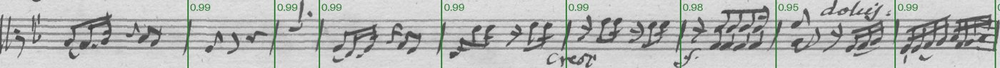
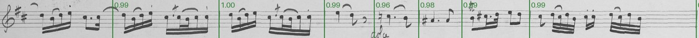
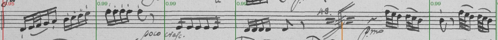
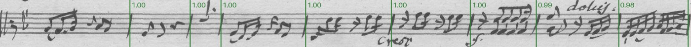
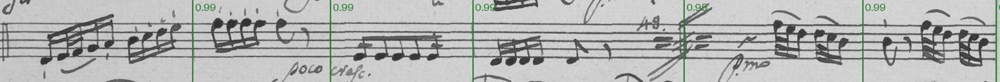
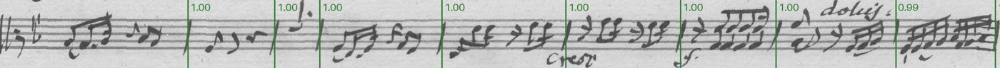
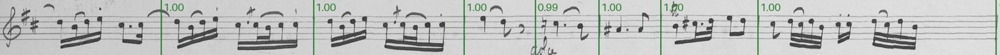
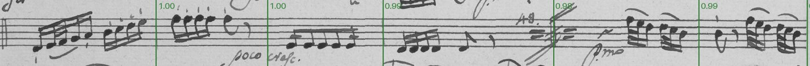

Detectron2 Faster R-CNNexperiment
Meta's two-stage detector (ResNet-50 with a feature pyramid), fine-tuned to box bar lines on the same tiles.
Detectron2 · model zoo · Faster R-CNN paper (2015) · Feature Pyramid Networks paper (2017) · our training script
Model card
- Architecture
- Faster R-CNN, ResNet-50 FPN backbone; anchors narrowed for tall thin boxes (aspect 2, 4, 8)
- Parameters
- about 41 million (published)
- Starting weights
- COCO-pretrained faster_rcnn_R_50_FPN_3x (Detectron2 model zoo)
- Licence
- Apache-2.0
- Input
- a 640 px tile of a straightened staff line, scaled to 192 px high
- Output
- boxes with confidences; a bar line is the centre of a box above the threshold
- Where it runs
- experiments only; needs a source build on macOS (see run_detectron2.py)
- Training time
- 92 minutes
- Per line
- 1021 ms on this Mac
- Weights file
- 330.0 MB
Data that went into it
Every counted staff line on the editor's reviewed music pages, straightened along the editor's bend, with the editor's bar lines as the truth. Lines are split at random (seed 1), stratified by source; the test lines are never trained on. Cells: lines / bar lines.
| hand | source | part | pages | train | validation | test |
|---|---|---|---|---|---|---|
| KHM | D-B_KHM-602 | Viola | 3 | 18 / 147 | 1 / 9 | 6 / 42 |
| KHM | D-B_KHM-602 | Cello | 3 | 17 / 143 | 2 / 15 | 5 / 41 |
| KHM | D-B_KHM-602 | Violin I | 3 | 21 / 136 | 2 / 12 | 7 / 53 |
| KHM | D-B_KHM-602 | Violin II | 3 | 19 / 150 | 4 / 29 | 3 / 23 |
| KHM | D-B_KHM-603 | Viola | 4 | 21 / 118 | 1 / 7 | 4 / 27 |
| KHM | D-B_KHM-603 | Cello | 4 | 16 / 97 | 2 / 12 | 7 / 43 |
| KHM | D-B_KHM-603 | Violin I | 4 | 22 / 121 | 1 / 6 | 5 / 25 |
| KHM | D-B_KHM-603 | Violin II | 4 | 22 / 112 | 1 / 3 | 6 / 33 |
| Paris A | F-Po_RES-507-14 | Cello | 4 | 15 / 132 | 1 / 12 | 5 / 38 |
| Paris A | F-Po_RES-507-14 | Violin I | 4 | 18 / 137 | 3 / 23 | 4 / 30 |
| Paris B | F-Po_RES-507-14 | Viola | 3 | 16 / 114 | 4 / 32 | 6 / 44 |
| Paris B | F-Po_RES-507-14 | Violin II | 3 | 20 / 139 | 3 / 18 | 5 / 32 |
| all | 42 | 225 / 1546 | 25 / 178 | 63 / 431 |
Tiles 640 px wide (stepping 480) of the straightened lines, at the labeler's render size, each bar line a box the staff's height and a staff space wide. A tenth of the training lines are validation: early stopping, the confidence threshold. The test lines are never seen. Tiles: 1058 training, 115 validation.
- sources/G226/D-B_KHM-602.pdf: labels at 96c0e3c 2026-10-07
- sources/G227/D-B_KHM-603.pdf: labels at 8fd9a4d 2026-10-02
- sources/G228/F-Po_RES-507-14.pdf: labels at 96c0e3c 2026-10-07
KHM: D-B KHM 602 and 603 (Op. 48 Nos. 1, 2), one copyist · Paris A: F-Po RES 507 (14) (No. 3), Violin I and Cello: one paper and hand · Paris B: F-Po RES 507 (14), Violin II and Viola: another paper and hand
How training works
A two-stage detector: a region-proposal network suggests places that might hold a bar line, and a second head classifies and refines each. Training starts from COCO weights and runs a fixed number of iterations (batches of 8 tiles) with a learning rate that drops at 70% and 90% of the run. It doesn't score itself on the validation tiles while training; only its losses are logged, so the chart shows those.
Its confidence threshold is chosen on the validation lines. On a hand it has never seen, its confidences fall below that threshold: trained on KHM alone it missed 41-57% of the Paris bar lines at its KHM threshold.
Settings
- iterations
- 3000
- batch
- 8 tiles
- base learning rate
- 0.005, ×0.1 at 70% and 90%
- input
- 192 px high (640 px tiles scaled)
- anchors
- aspect 2, 4, 8 (tall and thin)
- augmentation
- horizontal flips
- ROI batch
- 128 proposals per image
- device
- mps
The losses
- What a loss is
- A number the training lowers, batch by batch: how far the detector's proposals, scores and boxes on the training tiles are from the editor's. No units; only the trend means anything. Detectron2 logs only the training losses, so our measure on the validation lines (from its saved checkpoints) shows whether it generalises.
- Proposal losses
- The first stage proposes places that might hold a bar line: a cross-entropy for "something here or not" at each anchor box, and a smooth-L1 distance for how far each anchor must move and stretch to fit.
- Classification loss
- Cross-entropy of "bar line" against "background" for 128 proposals per tile.
- Box regression loss
- Smooth-L1 distance between the predicted and true corrections to each proposal's centre and size, relative to the proposal's own size.
- How it relates to our goal
- Total loss is the sum of the four. As with YOLO, much of it is about box edges we don't use; whether a bar line is found depends on the classification score and the box's centre.
Training
- total
- classification
- box regression
- proposals
Logged every 20 iterations on the training batches; noisy because each batch is only 8 tiles.
3000 iterations of 8 tiles in about 92 minutes; the learning rate drops at 70% and 90% of the run. No validation score is logged during training: the losses show how well it fits the training tiles, the results below how well it does on unseen lines.
- errors (false + missed)
- false
- missed
Each checkpoint at the confidence threshold best for it on these lines.
- on a bar line (178)
- not on a bar line (12)
Detections below 0.05 aren't reported. 0 bar lines had no detection near them at all. Detections right of the threshold are kept: blue ones are found bar lines, orange ones false bar lines; blue left of it are bar lines missed at this threshold. The wider the empty gap between the colours, the less the threshold matters.
What it found during training
One validation line per hand at the first, middle and last checkpoint: found (with confidence) false missed (lower half).








Results on the test lines
A prediction counts if within 0.6% of the page width of one of the editor's bar lines (one to one). Errors are false bar lines (a delete) plus missed ones (a click). Confidence threshold 0.85, chosen on validation lines; 1021 ms per line on this Mac.
| hand | errors |
|---|---|
| KHM | 7 (3 false, 4 missed; 2.4 per 100) |
| Paris A | 1 (1 false, 0 missed; 1.5 per 100) |
| Paris B | 3 (2 false, 1 missed; 3.9 per 100) |
| all | 11 (6 false, 5 missed; 2.6 per 100) |
Terms
- Found, false, missed
- Our measure, and the one that matters: a bar line is found if the model puts one within 0.6% of the page width (about a staff space) of the editor's; a false one is a bar line where the editor has none (a delete in the labeler), a missed one an editor's bar line with none near it (a click). Errors = false + missed.
- Confidence
- The detector's score, 0 to 1, that a box holds a bar line. Every box comes with one; we keep the boxes above a threshold, chosen on the validation lines to make the fewest errors.
- Precision, recall
- Of the boxes kept, the share that are bar lines (precision); of the bar lines, the share that were boxed (recall). Ultralytics reports them per validation tile at its own confidence cut-off.
- Box
- What the detectors learn to draw: a rectangle the staff's height plus half a space each way, one staff space wide, centred on each of the editor's bar lines. Its edges are a convention we chose; only its centre's x is used.
- Overlap (IoU)
- How much a predicted box and a true box coincide: the area they share divided by the area either covers. 1 is the same box; 0.5 is a box shifted by about a third of its width.
- mAP50
- Mean average precision: precision averaged over every confidence threshold (the area under the precision-recall curve), counting a box right if its overlap with a true box is at least 0.5. Close to our measure: a bar line boxed roughly in the right place.
- mAP50-95, box tightness
- The same averaged over overlap cut-offs 0.50, 0.55 … 0.95, so it rewards boxes whose edges match the true box exactly (box tightness). Our measure ignores the edges, so this keeps rising after the bar lines are already found.
- Epoch, iteration
- An epoch is one pass over every training tile (YOLO). An iteration is one batch of 8 tiles (Detectron2); 3000 iterations is about 23 passes over the tiles.
- Training, validation, test lines
- Training lines teach the model; validation lines (a tenth of the training lines, held out) pick the epoch and threshold and show progress; test lines are scored once at the end and never influence anything.
Future directions
- The most accurate model here and Apache-2.0, but about a second per line and a source build on macOS: a candidate for a "detect harder" button rather than every page.
- More labelled hands; a threshold that adapts to a new hand (or a confidence calibration step) so it doesn't go quiet on unfamiliar ink.
- Faster: a smaller backbone, CoreML export, or distilling it into the small models.